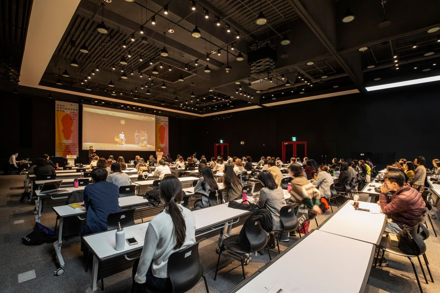
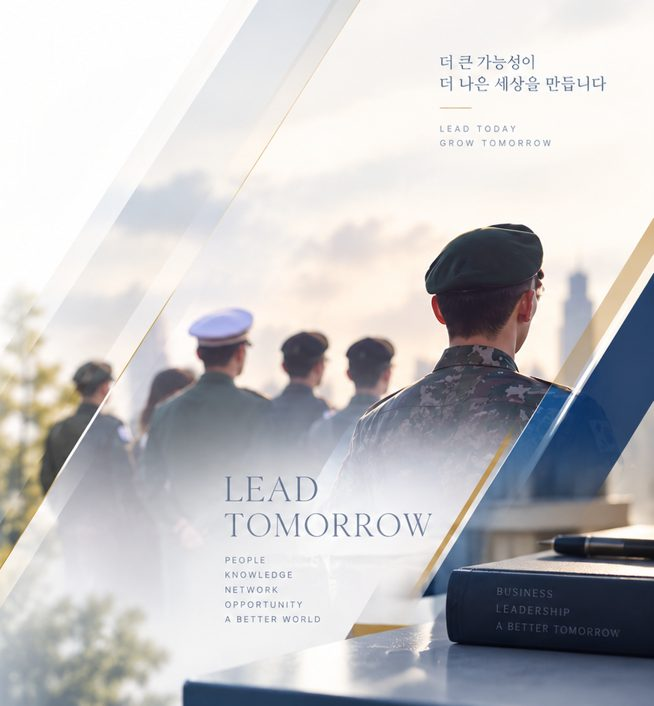
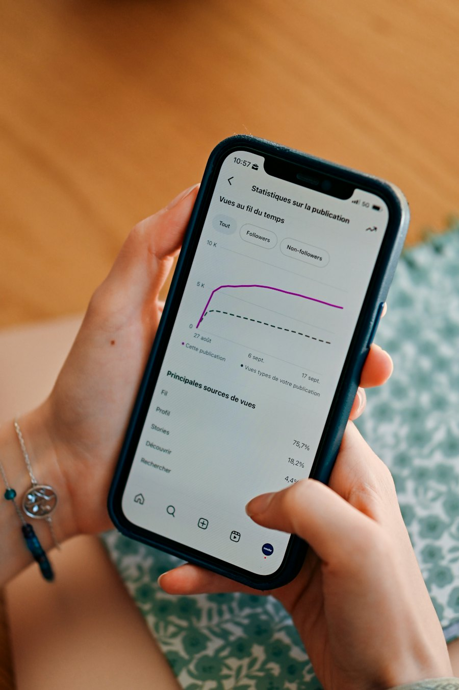

EDUCATION OPERATION
교육운영
- 대학원 학사·학생지원학사·수업·학생지원 등 교육운영
- LMS 운영·지원LMS 관리 및 온라인 학습지원
- 온라인교육 운영원격·블렌디드 수업 및 학습관리
- 지역거점센터 운영7개 지역거점센터 지원 및 운영
더리드온은 대학원 현장 운영 경험을 기반으로 교육 운영 · AI · 콘텐츠 · 디지털 기술을 결합하여 교육 서비스의 새로운 가치를 만들어갑니다.

교육운영의 전문성과 AI · 콘텐츠 · 디지털 역량을 결합한 통합 교육서비스 솔루션을 제공합니다.


AI는 사람을 대체하는 기술이 아니라, 사람의 전문성과 창의성·생산성을 확장하는 교육 파트너입니다.
교육 전문성과 AI 기술을 연결하여 교수자·학습자·교육기관 모두가 체감하는 지속가능한 교육혁신을 지향합니다.
학사·수업·학생지원부터 지역센터, 원우회·동문회 행사까지 정보통신대학원 운영 실무를 직접 수행해 왔습니다.
온라인 강의 기획과 스토리보드, 스튜디오·현장 촬영, 편집과 품질관리까지 사내 미디어팀이 맡습니다.
사전 인수부터 안정화까지 5단계 전환체계로 사업자 변경이 교육서비스의 단절로 이어지지 않게 합니다.
대학원 교육운영·AI 콘텐츠·디지털 홍보까지 한 팀이 맡습니다.